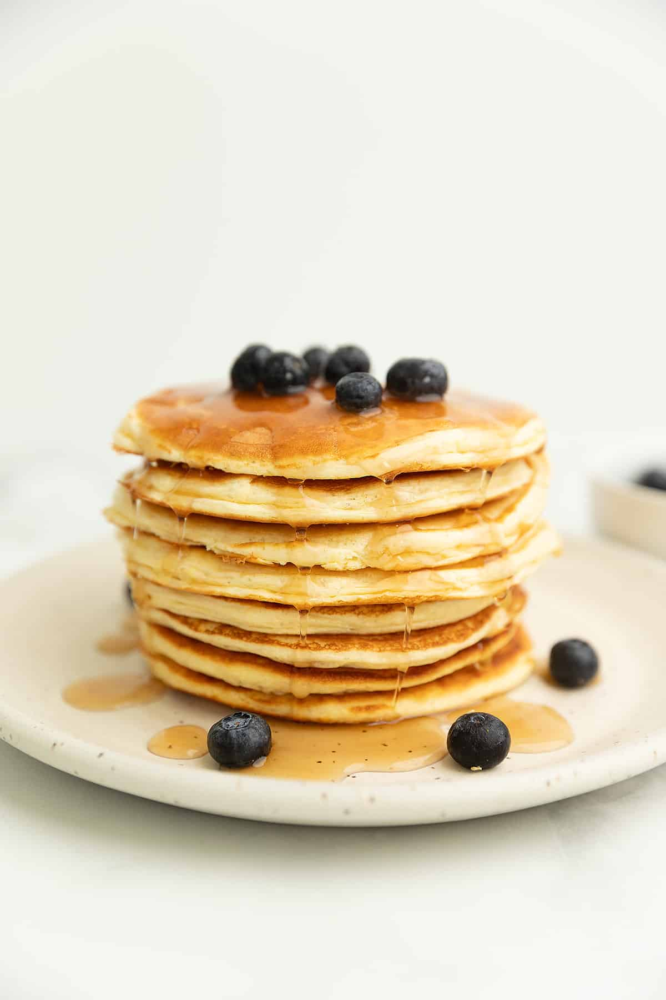

Protein Pancakes

Protein Pancakes Recipe with 40 grams of Protein!
Start your day with a burst of protein-packed goodness with our mouthwatering Protein Pancake recipe! These pancakes are not only delicious but also incredibly nutritious, making them the perfect choice for a satisfying breakfast or post-workout meal.
Each bite boasts a generous serving of premium protein, ensuring you stay full and energized throughout your busy day. Whether you're hitting the gym, tackling a long day at work, or simply seeking a nutritious breakfast option, our High Protein Pancakes are the ideal choice.
Ingredients
- 2 large eggs
- 1/2 cup plain Greek yoghurt
- 2 scoops protein powder of your choice
- 1 tsp baking powder
- Cooking spray, butter or oil for greasing the pan
Directions
- Place a non-stick pan on the stove over medium heat. Spray with cooking spray or use a little butter or oil and let melt.
- Mix the eggs, protein powder, and baking powder in a large bowl. Add the Greek yogurt and mix to combine.
- Using a 1/4 cup measure, pour out the batter into the pan. They are ready to flip when bubbles start to form on the top and around the edges are set.
- Serve with desired toppings